For strategist Holly Mander of Action Rocket, it starts with human connection, brand authenticity, and consistency across every touchpoint. From IKEA’s identity-driven storytelling to Decathlon’s purpose-led marketing and Boots’ human-first tone, Holly explores how brands can earn trust and loyalty through empathy, not just offers.
In this talk, she shares what happens when brands align purpose and action—and what goes wrong when they don’t. If you work in email, CRM, or brand strategy, this session will show you how to build stronger, more human communication that lasts beyond the next campaign.
TL;DR
- Lead with values, not discounts
- Emotion builds trust faster than logic
- Human connection drives loyalty
- Consistency across teams creates clarity
Holly Mander: Hi, guys. I'm going to use the next 45 minutes or so to discuss how you communicate your brand values. What you can expect is that I'll show you why this is valuable, how brands do it really well, ways to do it effectively, and examples of brands that are doing it quite poorly, too. I'll do that nicely and politely, and I'm hoping no one in the room is from those brands, because that would be quite awkward otherwise.
I head up Strategy Services at Action Rocket, a small agency that places a strong emphasis on human connections. I’ve been in marketing since there was a dial-up modem in the corner, so quite a long time, and before direct marketing even existed. In my role as a data or direct marketer, I’ve had the opportunity to explore lots of different positions: on the brand side, on the agency side, with tech partners, in big corporates, and in tiny businesses where the “E” on the keyboard doesn’t quite work but there’s no budget to fix it. One of the things I find amazing is helping brands create a human connection. I feel like I have two missions in life: helping brands communicate better on a human level, and getting through the school run without crying. If I achieve one of those, I’m happy for the day.
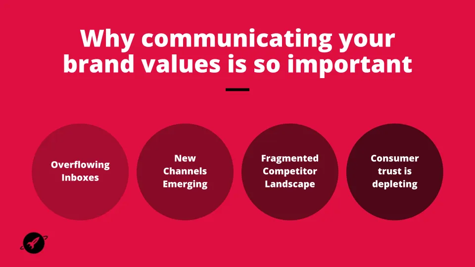
Why is it so important to communicate brand values? I know we have a mix of brands and agencies in the room, so I’ll try to tackle it from both perspectives. As we all work primarily via email, it’s no surprise that we’ve been fighting for attention for years. But your inbox today isn’t just the physical inbox where emails arrive. When you’re trying to capture someone’s attention, you’re competing across their entire phone: Slack, WhatsApp, and every other communication that’s coming in—not just from your competitors, but from every single brand.
New channels are emerging, and we’ve all seen examples of brands dancing badly on TikTok because they think that’s where their customers are. With smart devices becoming more common, my daughter listens to branded Disney stories on our Alexa at home. She’s already receiving brand communications—not aggressively as marketing, but subtly. My four-year-old also asks Alexa to make fart noises, so there’s still a balance to strike before we reach that point.
The competitive landscape is extremely fragmented. Since the pandemic, one positive outcome has been that it has opened up opportunities for most industries. It has never been easier for a brand to start up and gain traction. They create a Shopify site, and suddenly, they’re there, competing with you. Many of these brands already have the right presence and story about shopping small and local, which is a huge differentiator in today’s marketplace.
Finally, consumer trust is declining—not only in politics and policy, but also in how brands position themselves. Earth Day presents some brands with a great opportunity to showcase their sustainable features, but for others, it becomes a chance to make an empty claim with no real foundation. Consumers see through that. They want you to understand what matters to them and to align with those values.
So, in this day and age, how do you cut through the noise? Increasingly, we see brands relying on price promotions rather than communicating their brand values. Before I get into how and why brands do this well, I’d like you to think like a consumer. Think of a brand that comes to mind when you’re scrolling on your phone or sitting at home. Which marketing messages make you stop and pay attention? I’m not saying you open every single communication from that brand, but which ones make you pause, smile, or feel something instead of just scrolling past? Who are those brands, and as a consumer, how do they make you feel? I conducted a poll with my in-house designers. For them, the brands that stood out were those with great visual presence and identity, because that’s what they value most. For marketers, it’s often the brands they know and trust. I’d love to hear which brand it is for you—either tell me afterward or shout it out if you feel comfortable.
“Snag Tights.” Snag Tights. Why is that? How do they make you feel?
“I appreciate how consistently happy all their communications are and how inclusive they feel. It makes me feel like I’m in a safe space, which I need.”
See, that’s beyond just product or price or last week’s discount. That’s the emotional mark you leave on your consumer over time. Most often, when I work with brands, whether I’m working for them or within them, I see a massive conflict. The lion and the cat may change on either side depending on the brand, but there’s a significant disconnect between what a brand claims to be and how consumers perceive it. In agencies, we see campaign calendars filled with sales, but consumers see a constant stream of messages. One thing I challenge brands to do is look back at the last six months of communications they’ve sent. Can you tell who you are and what you stand for from that? If you can’t, how can your consumer? We’ve focused so much on shouting in the inbox instead of communicating a coherent brand story.
Part of the problem is the lack of a universal understanding of the brand’s vision and mission. Within marketing or CRM teams, there’s often a strong grasp of what they want to achieve, and that’s great. But the further you move from that core, the more diluted the knowledge becomes. The challenge is to ensure that everyone involved in marketing, regardless of their role, understands this core identity and consistently embodies it. Every piece of content doesn’t need to explicitly state it in words, but it should convey the feeling and ethos that define the brand. Whether we call it vision or mission doesn’t matter. It’s about the core of who the brand is and what makes it different. Now I’d like to showcase some brands that often appear in our inboxes. Hopefully, most of you will recognize them. Some I’ll show later to highlight what they’re doing really well. Generally, these brands are great examples of effective marketing. From a sustainability perspective, notable examples include Tesla and Patagonia. These are their mission statements. I’m not surprised by them.
When I start working with a brand, I like to put myself in the consumer's shoes. I sign up for every email, follow them on social media, visit their stores, and talk to sales staff to understand how they position themselves. I want to live and breathe that ethos—probably more deeply than most consumers. Often, however, the education and experience don’t align with what the brand claims to stand for. I’ll talk about BBC, Boots, and IKEA shortly. I love IKEA. I’m a big fan of what they do because they create content that showcases their brand identity exceptionally well. Whether you’re in-store or receiving one of their fun, well-designed emails, you can clearly see their identity. They turn their values into products and communications that consistently reflect their brand identity. Even during sales, you still recognize their tone, from copywriting and design to subject lines—it all embodies the IKEA brand.
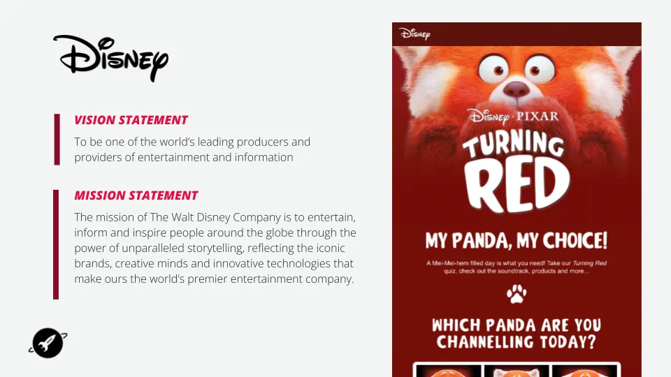
And then there’s Disney. I’m a huge fan of what they do as one of the world’s leading producers and providers of entertainment and information. Who’s seen Turning Red? Not as many as I thought. It’s a really cool film with a strong brand presence. Within their mission statement, there are three areas that they bring to life exceptionally well in their marketing. Not every single communication looks like this—that would be overwhelming—but their campaigns disrupt the inbox and create excitement. They excel in creative thinking, iconic branding, and innovative technology. Each of their movies has a distinct visual identity, yet still feels unmistakably Disney. Their use of interactive elements—like “tap to vote” features and emotional storytelling—builds engagement and connection. Even if you haven’t seen the movie, the emails still communicate that sense of fandom and magic. They use carousels, quotes, and character highlights, and while they’re ultimately selling something, it’s all wrapped in an authentic brand ethos that works incredibly well.
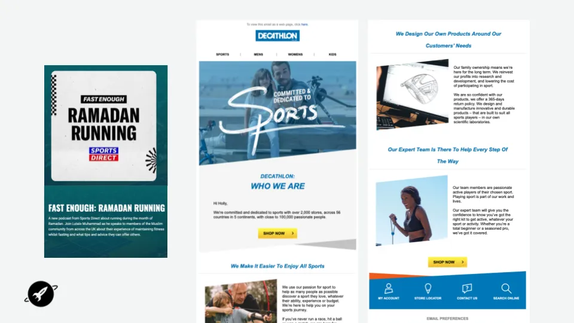
Next, I’ll show you a video from another brand I love: Decathlon. They have over 2,000 stores across 56 countries and take a unique approach to sport that they showcase beautifully on their website. This video, from their site, explains who they are. “To sustainably make the pleasure and benefits of sport accessible to the many. These words that we proudly state are the expression of our purpose. It is for this purpose that we, the women and men at Decathlon, get up every morning. By imagining a tent that can unfold itself, we allow millions of people to go camping. By making breathing underwater possible, we allow millions more to discover the underwater world. By focusing on eco-design in our product development, we create solutions that connect people with sport and the planet.”
I love that. It gives me goosebumps. That’s the sort of branding that I adore. They do an amazing job replicating this in their stores. When you go into their stores, you can see the investment they’ve made in product development. They make it accessible from a price point of view, and every individual in their stores who serves customers knows sports inside and out. Their point-of-sale marketing is lovely. It’s not heavily branded. They don’t invest in big flashy campaigns. It’s not Nike. It does what it says: it makes sports accessible, and it doesn’t make you, as a customer, feel concerned or intimidated when entering the store.
But how do you translate that to digital marketing? That’s hard. That passion, that belief, that tactile nature—it’s really difficult. They manage to do it nicely in two ways. They are not the slickest in design, and that’s fine because it wouldn’t fit with their brand. That’s not who they are. It’s not about having iconic imagery; it’s about being honest. This is one of their welcome programs that I received as a customer. They do a good job, like 99.9% of brands generally do, but a bit better than most in the sense that their welcome program makes a big show of who they are. Most brands include a tiny footnote line at the bottom of an email that provides a brief introduction to who they are, and then they never mention it again. However, Decathlon lives and breathes its identity and purpose throughout its emails.
For example, even though I retarget them, I still go on their site and look for horse riding boots. I don’t buy anything, and then I receive a really nice, rich email all about horse riding that doesn’t contain any products. It just gives me information. Some brands can do that really easily and really well. This isn’t hard to do in that sense, but it’s smart and human. They also want to understand their audience. Recently, they ran a campaign around Ramadan. They sent out a survey to their customers and found that 80% of their Muslim consumers aged 18 to 35 were concerned about exercising during Ramadan and were unsure of the safest way to do so. So they explored another digital channel and developed a podcast called Ramadan Running to provide that education and make sport more accessible to everyone. They promoted it really nicely, too. While these two brands differ significantly in size—Disney is enormous, with presumably substantial budgets—Decathlon is smaller. For smaller brands, understanding how to establish this kind of connection is more challenging. Both examples, though, rely on teamwork, and a “team” can mean many different things.
For a brand, it could mean two people sitting together trying to cover every single channel. It could mean a huge corporate organization with 50 people all striving to embody and live by the same values. And when you’re working on the partner or agency side, it could mean having five different agencies on your roster, all trying to understand what you want to achieve. No matter what that team looks like, the foundation must remain the same. As we said at the beginning, there’s often a disconnect between understanding what you’re trying to achieve as a brand and delivering that next brief due on Friday. You must ensure that knowledge is shared throughout the team.
That’s why, when I work with a brand, we focus at the start not just on the brief, but on understanding the brand. We don’t want just me to know their brand. We want our coders and designers to know this, too, because they’re also involved in the work. Everyone needs to be aligned in the right way. We also want to know the “why,” not just the task. We don’t want to simply hear that next week you’re launching a new campaign and you need one email to promote it, along with the assets. That’s fine when you’re delivering, but at the beginning of a relationship, we want a deeper understanding. We want to know your objectives for the year. What are you trying to achieve? Who are you competing against? How does your marketing make that difference?
Ultimately, as an agency, we always want a clear understanding of success and results. Why are we doing what we’re doing, and what are we trying to impact? Are we focusing on metrics such as open rates or conversion rates in CRM campaigns, or is it about revenue, and what specific revenue target are we aiming for? Business conditions change, and regular check-ins are essential. Working on both the brand and agency sides, some of the most successful cross-team relationships I’ve seen—at both large and small brands—include an annual update where everyone comes together to discuss progress. Agencies often keep all their partners separate, but that doesn’t make sense. Keeping agencies separate doesn’t bring out the best in their skills and resources.
When you pull everyone together for a session to review what last year achieved, what this year needs to focus on, and what the priorities are, and then let the agencies collaborate and share their unique strengths, you get better results from every brief moving forward. Beyond understanding brand and ethos, we also face additional challenges. We are all aware of the diminishing digital attention span—people no longer read emails as often. I tell my clients this regularly. Consumers don’t read every word in your email. They skim. Think about Tinder or TikTok: it’s tactile, we swipe, we scroll, we multitask, and yet you still need to cut through. That’s hard.
Millennials pick up their smartphones about 150 times a day. I’d challenge any parent on a dozen WhatsApp groups—that number probably triples. And every time we pick up the phone, we’re supposed to notice, understand, and act on a marketing message, no matter which channel it comes through. While the pandemic may feel like a distant memory, the increased cost of living and the energy crisis—affecting not just the UK but also beyond—mean consumers are tightening their budgets. Netflix lost 200,000 subscribers over a three-month period. If Netflix is feeling it, every brand will.
A recent Marketing Week study in the UK found that 91% of the population is concerned about rising costs and already adjusting their behavior. This was before winter even started. Imagine what spending will look like then, especially in retail’s biggest quarter of the year. The pandemic’s aftereffects haven’t disappeared. The energy crisis has resurfaced, raising new concerns about job security and safety. Fundamentally, as employees and consumers, we all share the same basic needs. The pandemic shattered Maslow’s hierarchy of needs—from the basic levels of safety and security to the higher need for purpose. When consumers are under stress, a misaligned, poorly timed, or poorly executed communication can exacerbate their feelings. So, as brands, or when we’re working with brands, how can we help? We identify four pillars that every brand can engage with in various ways.
From a safety perspective, consider how Uber has pivoted in the last few years, focusing on rider safety and how people want to interact with their product. From a security perspective, financial services brands not only can but must engage deeply with issues like fraud and phishing trends. Every brand, regardless of sector, also needs to become a distraction—a positive one. Too often, brands assume that if a customer isn’t buying right now, they’re not valuable anymore. During the pandemic, we saw some brands thrive while others struggled, unsure of how to react. We know that as consumers, we’re human, and marketers are human too, facing the same challenges. But not communicating with your audience because your shop is closed or you can’t sell anything isn’t customer relationship management—it’s revenue management. Talking to someone only when they can buy from you is not relationship building. Many brands did nothing or ignored the pandemic’s impact on their consumers, which was worrying. But some did really well, and I’ll showcase a few examples.
Airbnb, for instance, saw a large part of its business shut down. They didn’t panic. They gamified certain aspects for their hosts, creating a “cleanliness quiz” that allowed hosts to better understand what guests expected in the new world.
Nespresso, on a more subtle level, adjusted the tone of its communications. They spoke differently to customers, understanding they were at home, under stress, and looking for small comforts. They focused on coffee breaks and how to enjoy their product in that context. It is still pushing content out, but it’s doing so mindfully, based on where that customer is.
Boots. For people outside the UK, Boots is a large pharmacy and beauty brand with stores located everywhere, from huge flagship shops to small local pharmacies. I’m a huge fan of Boots and what they do. I’ll showcase a little more about them later, but what they did throughout the COVID crisis was amazing. Their reaction was thoughtful and human. They remained open throughout the pandemic, allowing them to retain the advantage of generating sales. Every week, we had Prime Minister’s Question Time, and every week they sent an email saying, “How are you feeling? This is what the news means.” They made it human, relatable, and easy to understand—ready to read and relevant. They didn’t stop after COVID. They’ve continued to take that same human approach forward.
B&Q. Moving on to DIY brands, B&Q also did a fantastic job. I don’t know about you, but I did DIY very badly throughout the pandemic. They created excellent online resources to assist people with tasks such as regrouting tiles or home repairs. At that time, they could have easily gone for the hard sell—everyone was buying paint and trying to make their gardens look nice—but they also provided drip-fed useful content that showed customers how to do things safely and confidently.
Pizza Express. Pizza Express was severely impacted throughout the pandemic. Most of their restaurants were shut, and they didn’t have much else to sell. They did promote some supermarket products, but otherwise, they had no way to generate sales. Despite that, they still maintained their relationship with customers. They “opened the vault” and gave people access to recipes for their signature dishes, letting them recreate the restaurant experience at home. As a parent who frequently visits Pizza Express, I’ve always appreciated what they do for families. When you go into their restaurants, they have little corner packs and activities that keep kids entertained—and, frankly, give parents a chance to relax and enjoy a glass of wine. During lockdown, they asked us to replicate that fun for families at home while everyone was struggling with homeschooling. We created three online games for them, as their audience spans a wide age range. The one I love most was a simple online piano: whether on mobile or desktop, kids could tap squares to play Twinkle, Twinkle, Little Star. For older children, we created word searches and crosswords. It was a way for Pizza Express to stay connected with customers at a time when they were closed and had nothing tangible to gain. They weren’t selling anything; they were simply maintaining human connection when people needed it most.
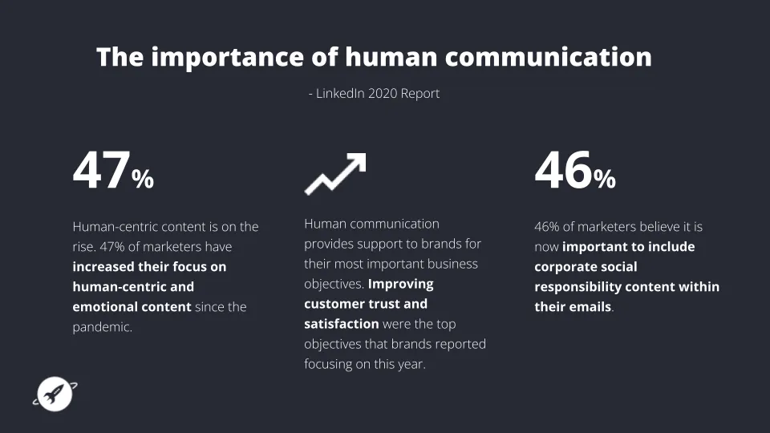
The core of all these examples is that human connection—reaching customers in ways that truly matter to them. I encourage you to review the two reports I reference throughout this presentation. One, from LinkedIn, highlights the importance of human communication. We’re starting to see more and more brands focus on emotive messages. There’s a growing trend toward consumer-led marketing, which is quickly becoming a new buzzword. But really, it just means talking to your customers in a human way, understanding that you’re a person and so are they. Since the pandemic, some brands have continued to excel in this area. They understand it’s not just about immediate results; it’s about building long-term trust and satisfaction through ongoing relationships. We’re also seeing a rise in consumer interest in corporate and social responsibility. Reports show that customers are increasingly expecting brands to have a voice—to speak out about environmental issues and utilize their platforms to make a positive impact. Unfortunately, many brands still don’t.
We’ve become a little addicted to short-term wins—the quick hits that a promotion delivers—without understanding or even measuring long-term customer value. We focus on Thursday’s campaign results, celebrate a quick spike, and then immediately try to beat that number next week. But we rarely consider the time and cost of acquiring that customer, the long-term value they could bring, and how to foster that relationship. I’m not saying price promotions will disappear—they won’t—but they shape your image as a brand. A longer-term mindset means keeping customers for the long haul and increasing their lifetime value.
This brings me to a report from the IPA that resonated deeply with me. The title says it all: “Just because people like your offers does not mean that they like you.” An open rate spike for a sale or Black Friday campaign doesn’t mean those customers will return. If you’re not nurturing them, they won’t stay. The IPA report clearly explains the difference between emotional priming and rational messaging. In the short term, rational messages—such as discounts—will prevail. When you present an offer to a customer, they’ll buy. But in the long term, relying only on that approach leads to decline.
Ultimately, regardless of where or how you communicate with your audience, you need to consider what it takes to achieve your goals. I’ve discussed user experience and building brand affinity extensively. Because if you’re not competing on price or product range, where are you competing? You’re competing on brand connection and experience. Everything we do still needs to drive results—whether that’s long-term customer lifecycle value or short-term conversion bursts. However, the way we deliver those messages must adapt to the short attention spans and social habits of our audience. People scan, scroll, and interact with media in tactile ways. Email and other channels must reflect that. The message has to be easy to understand and accessible to everyone. It’s worth saying: accessibility isn’t just a nice-to-have. It’s essential.
Understanding tactics like dark mode is part of that. Developers often see that when dark mode is applied, an email suddenly looks unattractive or unreadable. If your design doesn’t hold up, your message and your brand suffer—and many customers view emails that way. We strive to provide an excellent experience for everyone, everywhere. One of the brands I showcased earlier with its mission is the BBC. We’ve worked with the BBC for several years, and I have to include David Attenborough as an example—not just because the visuals are stunning, but because their focus on informing, educating, and inspiring truly comes through in their marketing.
Across their campaigns, you always feel informed, educated, and inspired. Ultimately, the goal is to get you out of your inbox and watching the program. The BBC uses several clever tactics. For example, one email promoting The Green Planet used an accordion-style layout. At the top, you could click to explore tropical worlds, water worlds, or seasonal worlds, and the entire email changed dynamically based on your choice. This kind of interactivity brings the content to life in a tactile way. Disney does this brilliantly, too, but the BBC uses it to disrupt the inbox in a gentle, engaging way. I also love that they educate their audience at the same time. At the top of the email, there’s a small note explaining that it’s an interactive message, just to guide users who may not be familiar with that technology. It’s thoughtful. The Perfect Planet campaign had a specific goal: to drive more viewers to iPlayer. The results showed that people who received that email were more likely to visit iPlayer, and those who did were more likely to watch multiple episodes of the series. It’s a great example of how to bring content to life and use design to inspire action. 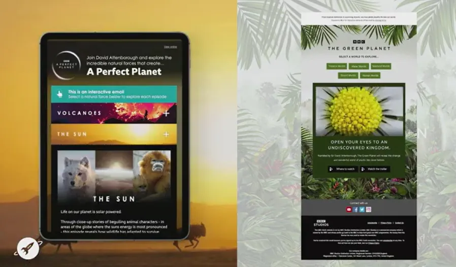In the next section, I’m going to talk about how to make all of this actionable. When you have your brand story and your message, how do you translate that into something practical? One of the tools we use in the agency is called a Customer Needs Wheel. We use it in projects to understand everything we could say—and how to articulate it effectively. The wheel has three levels:
- The center represents a key aspect, such as a milestone (for example, a welcome program, reactivation campaign, or weekly newsletter).
- The middle ring includes high-level customer needs.
- The outer ring lists everything we could communicate to meet those needs.
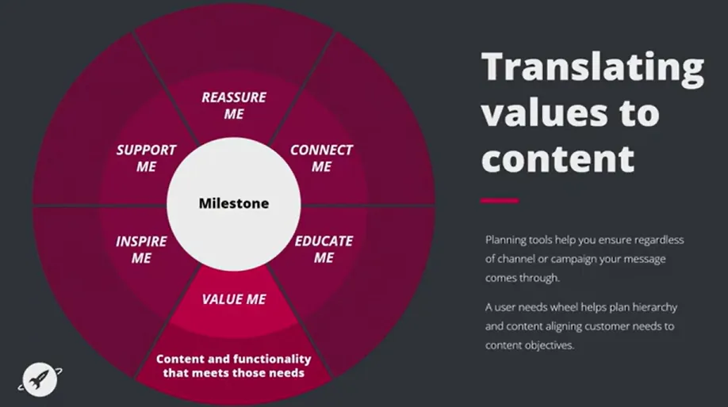When we plan, we think about reassurance, connection, education, value, inspiration, and support. Once we understand all the possible messages, we still need to prioritize them. We simplify it to three questions: What do we want the customer to think, feel, and do?
For example, in a welcome or education program, education and inspiration are high priorities, while reassurance might not be as critical. In a reactivation campaign, where you’re trying to win people back, reassurance becomes much more important. One of my clients has kindly allowed me to share the next piece of work, which isn’t even live yet. We're still working on this program, so I’ve never actually been able to share a piece in situ or at this level of depth. This is tantamount to the brand because I adore this brand.
Skylight is an American company focused on spirituality and wellness. They’ve recently launched, and they have an amazing app with exercises for all approaches to spirituality and wellness. They’re really open-minded and provide numerous paths through podcasts and meditation techniques. They are a brand that doesn’t just say they want to be customer-first; they are actively, genuinely trying to be customer-first in every single communication they create. We’ve been working on a project for them—a welcome program designed to educate and inform new users of the app, which currently exists as a mobile app but will also be available as a web app. The goal is to give users insight into who the brand is and why they’re different.
This is their Customer Needs Wheel for the program we’ve been developing. Because it’s still early in their growth, we knew we needed to focus on reassurance. For example, addressing questions like, “Do I have to be religious?” We wanted to make it clear that Skylight isn’t tied to any specific religion. They don’t have boundaries when it comes to spirituality. They occupy a unique space—somewhere between religious content, spiritual guidance, and mindfulness. They know their audience extremely well. The people they attract want to feel part of a community, connected with like-minded users through social channels and shared experiences.
At the same time, most of their users are unsure of where to begin. Many are dealing with challenges such as recovering from grief or searching for meaning and purpose in their lives. We wanted to guide them gently through that process. These designs aren’t live yet; we’re still refining the content and copy. This is how we’re bringing Skylight to life within the welcome program. These are three of several messages in the series, using fun, customer-first techniques to align perfectly between the app and the design.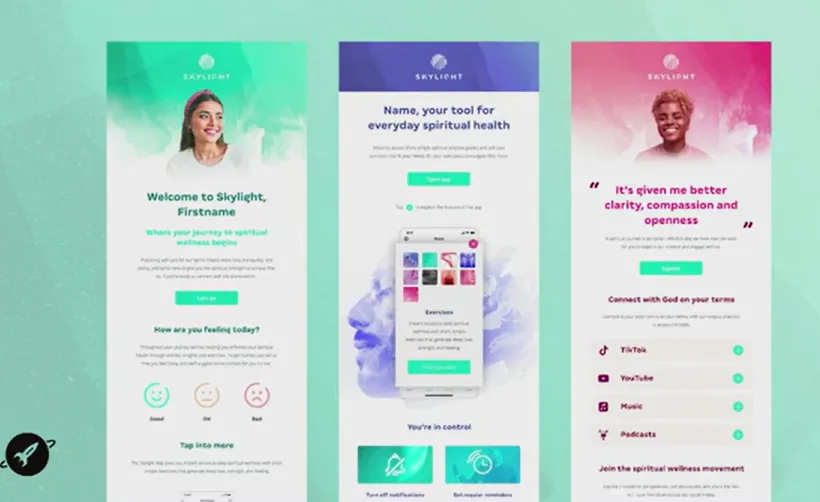When I discuss teamwork, this project is a prime example. At our agency, I don’t sit separately from designers and developers. I sit with them as we plan each piece of work. We hold inspiration sessions where everyone contributes ideas. I’ve worked in places where strategists sit in one corner, designers in another. I create a plan, the client approves it, and it gets emailed to the designer and developer to make it “look nice.” I never saw it again. That doesn’t work because ideas get diluted. We ensure that everyone—designers, coders, and copywriters—thoroughly understands the brand. We aim to make the technology amazing by incorporating interactive functions that bring the app to life with clickable elements. For example, when we ask, “How are you feeling?” we can link users directly to relevant content that reflects that emotion.
At the bottom, there’s a message saying, “You’re in control.” That’s key. We make it clear that users decide what communications they receive. We will not bombard them. One of the amazing things Skylight wants to do is let customers set their own program—choosing how it will help them achieve their personal goals. Our communications are designed to comfort and support them, not nag them. We won’t say, “Have you done an exercise?” repeatedly, as many mindfulness apps do. Skylight aims to empower people to feel calm, not pressured or overwhelmed.
We’re still refining everything, and we’re nearly ready for market launch. I think it looks fantastic. Another essential point: once you’ve done something amazing, learn from it. This is a heat map—as marketers, we often see them, but we rarely use them effectively. It’s a small thing that can make a big impact across a team.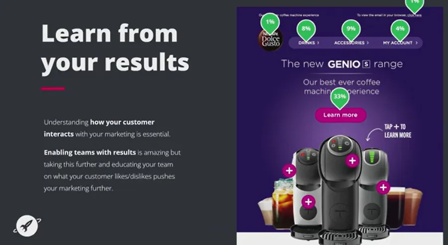When we work with Dolce Gusto, everyone sees the heat maps: developers, designers, and copywriters. They all want to understand exactly where customers are clicking and how they scroll down the page. That knowledge helps us understand what works. We’ve learned, for example, the ideal button size and placement for Dolce Gusto customers. Reports can’t tell you what your customers like, but real behavior can. We know they’re not fans of inline text. We know how many modules we can stack before losing attention. We know what tone resonates best. We’ve been doing this for two years, and every time we notice something—like “Oh, they clicked down here” or “This interactive module performed really well”—we adapt. We use the basic heat maps from our ESP to see exactly what customers do. If you take one thing from this talk, it’s this: open the doors to insight. Let the whole team understand it. That’s when you’ll see real transformation in how you work, bit by bit. When it goes right, it’s great.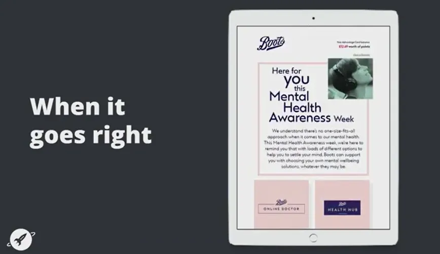Now, back to Boots. This is a recent mental health campaign from Boots. As I mentioned earlier, during the pandemic, they did an amazing job with human-first communications, and they’ve continued that approach. This campaign focuses on wellness—offering tools, features, and products to help customers take care of themselves. They aim to build communities and show how health benefits their audience. But they’ve been doing this for years; the pandemic wasn’t their first step in this direction. When I signed up for the Boots Parenting Club after having my first child, I was overwhelmed by information—most of it patronizing, scary, or in-your-face. Boots took a different approach. Their Parenting Club was kind, helpful, and even fun. It offered information similar to other brands, but in a softer, more understanding manner.
For example, during potty training, they created fun and supportive content to reassure parents. They also transitioned smoothly from birth through toddlerhood, maintaining relevance along the way. Most brands think that if they have you until your child turns one, they’ve earned your loyalty. Boots goes further by integrating content and products seamlessly, showing that they understand parents’ needs.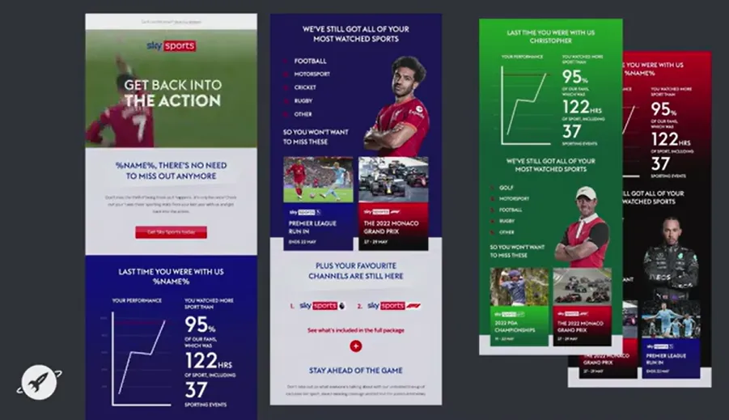Sky Sports. This is a recent campaign targeting customers who no longer subscribe to Sky Sports but still have a Sky subscription. I’m not saying brand storytelling can’t coexist with strong reactivation messaging—they’ve combined the two really well here. They’re promoting the product, but doing so in a way that aligns with Sky’s ethos of being informative and engaging. They understand fandom. We’ve all seen data used badly—brands showing irrelevant stats just because they can. The worst I’ve seen was a shopping app that sent me a “year in review” even though I’d barely used it. It looked terrible. When data is used well, it’s wonderful; when used badly, it’s embarrassing. Sky uses data well. They tap into the passion of sports fans through gamification.
For example, for football fans, the campaign showed how many hours of sports they’d watched—something like, “You watched more football than 95% of our fans.” That’s a fun, brag-worthy stat for a football lover. They also used mass personalization. They had different versions for multiple sports, such as golf, tailoring the tone and visuals to each audience. Across all of it, they maintained Sky’s identity—dynamic, action-driven, and fan-focused—while still promoting their offering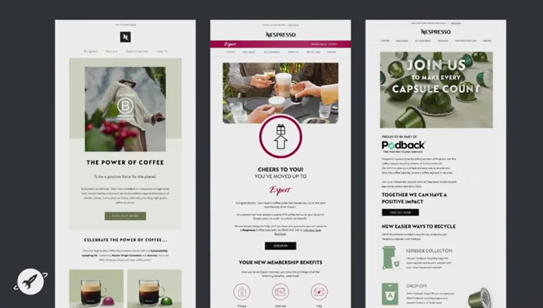Nespresso. Nespresso has a strong sustainability ethos that it integrates beautifully into all of its communications. When they achieved B Corp certification, they celebrated it thoughtfully. There are only about 4,500 B Corp-certified brands globally, including Patagonia and The Body Shop. Nespresso doesn’t just talk the talk—they walk the walk. They highlight achievements such as supporting farmers, reducing deforestation, and enhancing recycling. Their Podback program, for example, makes recycling coffee pods easy—you can leave them out with your household waste for collection. They’ve even turned recycled pods into items like pens and bicycles, which is a clever and tangible way to show progress. In their emails, they naturally reinforce these values. If they’re introducing a new Sumatra coffee, the footer might include a reminder: “Did you know about our recycling program?” It’s a simple, consistent way to align their content with their brand ethos.
Nespresso is a great example of a brand whose message, content, and marketing all work in harmony. But it doesn’t always go well. And I really hope there’s no one from HSBC in the room. The next example went wrong—not intentionally, but due to misalignment.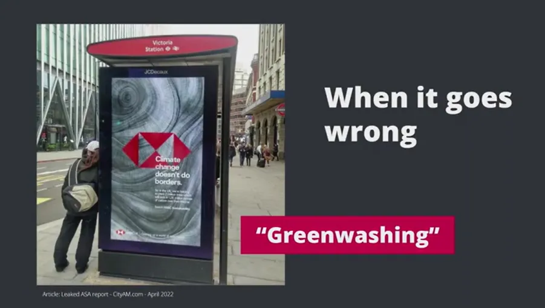This campaign is currently under review by the Advertising Standards Authority in the UK. It was a bus poster campaign from October last year that focused on climate change. The poster said: “Climate change doesn’t do borders.” It highlighted that HSBC was helping to plant two million trees, locking in 1.2 million tons of carbon over their lifetime. However, the early findings suggest the campaign was misleading. HSBC’s sustainability campaign didn’t mention the fact that they’re ranked among the 13 worst banks in the world for sustainability. There’s a significant disconnect between what they claim and what they actually do, given their substantial investments in fossil fuels. So, obviously, part of who they are as a company doesn’t align with that message.
We’re seeing this happen more often—brands jumping on the bandwagon of a specific day or theme without having the foundation to support it. Increasingly, consumers are calling them out. Just this week, KLM was sued by an environmental charity over one of its advertisements, which was accused of being misleading based on its actual business practices. As these cases gain more attention, larger brands will feel the impact. 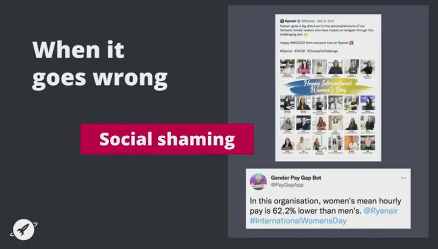And finally, one of my favorite examples—has anyone seen this? Or can I educate you? I absolutely loved it. I might have done a little dance when I saw it for the first time.It came out on International Women’s Day this year. Every year, lots of brands have polished social media posts planned in advance, showcasing their amazing female employees, although many still don’t pay women equally to men in their organizations. A copywriter and an app developer grew tired of that hypocrisy. The developer, a woman, created an app called Gender Pay Gap Bot, which can still be found online—it now has over 75,000 followers. The idea came from her experience writing those kinds of posts for her own company, knowing full well that women there were paid significantly less than men.
So, instead of letting brands virtue-signal unchecked, the bot automatically responded to any tweet that used the #InternationalWomensDay hashtag. It pulled publicly available data—because in the UK, any business with over 250 employees is legally required to publish pay gap statistics—and replied with factual information about that company’s gender pay gap. For example: “In this organization, women’s mean hourly pay is 62.2% lower than men’s.” The bot would tag the company directly, quote-tweet their post, and display the real numbers. Some brands came out looking great because they actually had equal pay policies in place. Others came out very badly. Many panicked, deleted their tweets, and reposted without the hashtag, hoping to dodge the bot. However, the bot caught them again, which made the situation even worse.
One brand—I can’t remember which—claimed, “Sorry, we had a copywriting error,” after being called out. You can imagine how chaotic Twitter became. It exploded in the UK with social shaming, and rightly so. When you put out a beautifully curated post pretending to support a cause, knowing there are researchers or tools that can instantly fact-check you, it’s painful when you’re exposed. However, it’s also beneficial because it encourages brands to act with integrity. If you’re going to join a conversation—whether it’s Pride, Black History Month, or International Women’s Day—make sure your message aligns with your values. Don’t just say something; do something. Consumers are becoming increasingly vocal, using social media to expose brands that fail to meet their own claims.
So, I’ll leave you with this: With consumer trust declining, how can you stay ahead? The key is to understand what makes you unique. Whether you’re a brand or an agency, understand your core identity and share it clearly. If you’re an agency, challenge your clients to educate you about their brand—it helps you create better, more meaningful work. Too often, we rush to deliver on a brief without fully understanding its meaning or its place within the brand’s ecosystem. Communicate your identity consistently. Think of Nespresso, and how they weave their values through everything they do.
Look back at your last six months of marketing. If you haven’t really talked about who you are at that time, that’s a problem. Because ultimately, creating more human connections leads to deeper brand loyalty and longer-term customer value.
Thank you.